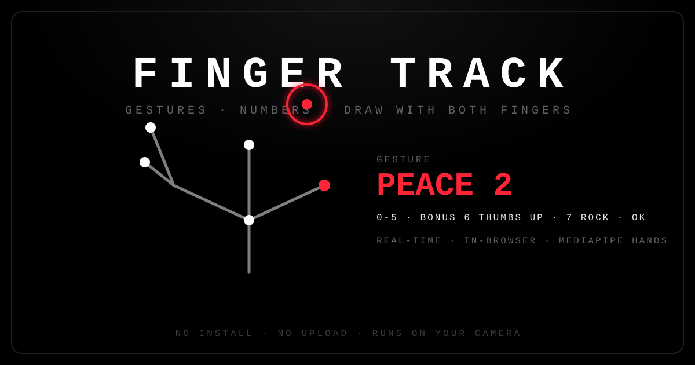
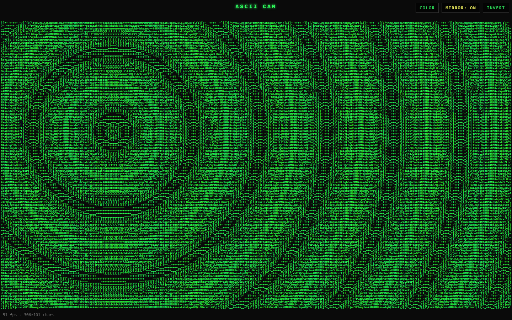
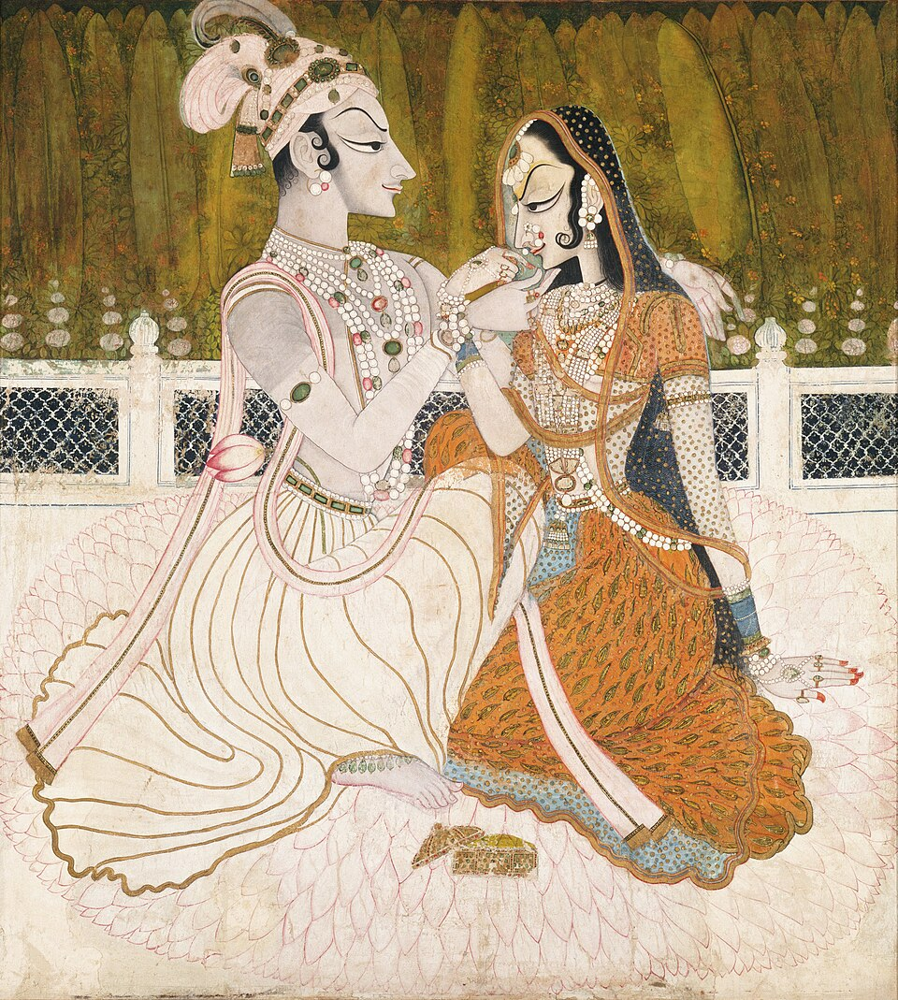
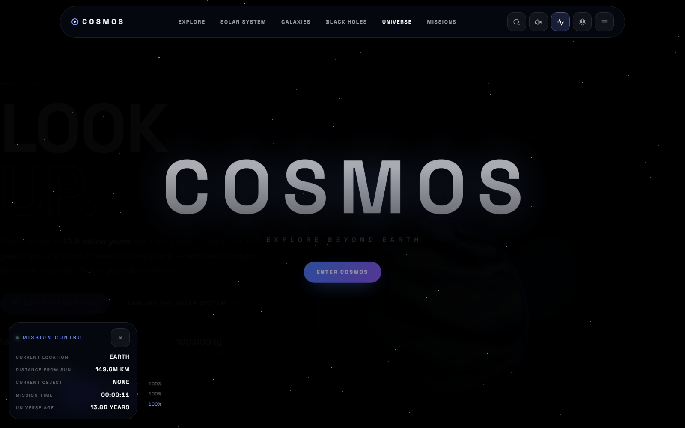
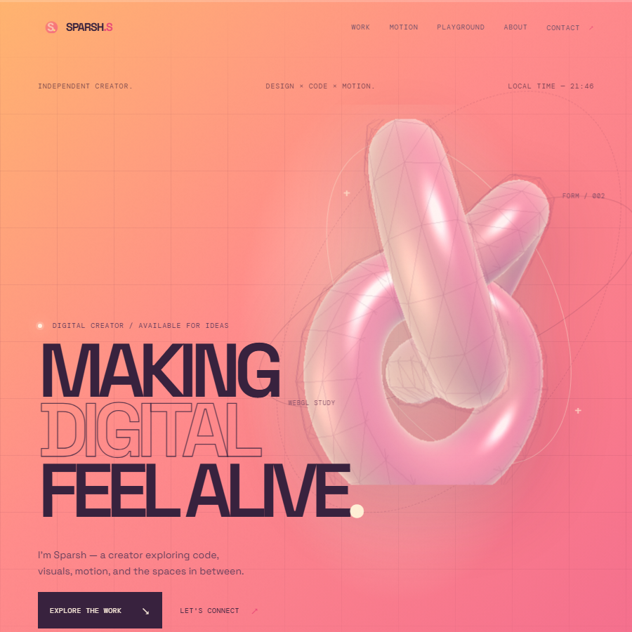
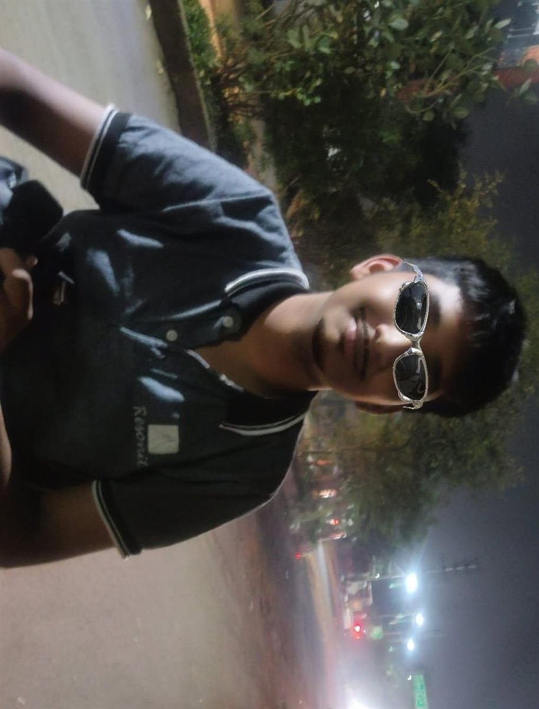

DIGITAL CREATOR / AVAILABLE FOR IDEAS
MAKING
DIGITAL
FEEL ALIVE.
I'm Sparsh — a creator exploring code, visuals, motion, and the spaces in between.
A SMALL UNIVERSE, BUILT WITH INTENTION
I build things that didn't exist
this morning — then I take them apart to see how they feel.
Curiosity is the starting point. Creation is what happens next.
Code. Motion. Design. Experiments. Independent mind, open tabs, endless iterations.
- 01 Curiosity before credentials
- 02 Craft over shortcuts
- 03 Ship it, then refine it
- 04 Stay a little strange
Things I made
because I had to.
Real work from my GitHub and my timeline — browser experiments, scroll-stories and motion. Every cover opens the live thing in a new tab.

01EXPERIMENTFinger Track
↗Real-time hand-gesture tracking in the browser — detect gestures, read numbers 0–7, and draw in the air with both index fingers.

02EXPERIMENTASCII Cam
↗A camera experiment that renders a live video feed as ASCII art — text as pixels, in real time.

03SCROLL-STORYRadhe Krishna
↗The life of Krishna told as a scroll-story — a long-form single-page narrative driven entirely by scrolling.
Race Edit
↓Sound-synced cuts, speed ramps and grade — cut to the rhythm and built for full-screen playback. Watch it in the Motion section.

05WEB BUILDCosmos
↗A from-scratch single-page web build — one of my larger front-end experiments in structure and layout.

06THIS SITESPARSH.S
↗The hand-built static portfolio you're reading right now — no framework, just the fundamentals.
Code is another
creative medium.
Good digital work lives somewhere between logic and instinct. This space is for interfaces, experiments, and small ideas that become something you can interact with.
EXPLORE THE PLAYGROUND ↘Interactive websites
Layouts that invite exploration.
↗Responsive interfaces
Thoughtful from small screens up.
↗Motion systems
Movement with purpose and rhythm.
↗Creative coding
Experiments at the edge of design.
↗Every frame
has a feeling.
Video editing is more than cutting clips. It's timing, rhythm, sound, and knowing when to let a moment breathe.
FRAME 01 — VISUAL EDITPLAYBACK · SOUND ON · 16:9
Things on
the internet.
Every public repository, with a real README screenshot when one is available. Select a cover to open the project.
Not everything
needs a reason.
Small interactive experiments. Press things, change things, see what happens.
IS A
FEELING.
Change the accent and watch the lab respond.
IT
MATTER.SPARSH.S / VISUAL SYSTEM

A WORK IN PROGRESS — LIKE EVERY GOOD THING
Still learning.
Always building.
I'm Sparsh Singhal. I like exploring what happens when design, technology, and storytelling come together.
OLD
Getting older by the second. Just getting started.
From building websites to editing videos and experimenting with visuals, I'm interested in turning ideas into things people can actually experience.
CURRENTLY EXPLORING
CURRENTLY INTO
New ideas, visual systems, and the next thing I haven't figured out yet.
A snapshot,
not a monument.
What's on my screen and in my head this season. It changes; that's the point.
A loop of something cinematic.
Title sequences and short films.
Design systems, motion studies.
Shader fundamentals.
This site, and whatever's next.
Every public playlist — the music that shapes how I cut, pace and compose.
How an idea
becomes a thing.
The loop I run on almost everything: follow the curiosity, build it ugly, break it, then make it feel right.
- 01
Notice
Start with a feeling, a detail, or a question I can't drop.
- 02
Build
Get a rough version working — momentum over polish.
- 03
Break
Take it apart. Find where it's honest and where it's just decoration.
- 04
Refine
Turn ones and zeros into feeling: type, timing, colour, restraint.
- 05
Ship
Put it in front of real people, then keep iterating.
Built with tools.
Driven by curiosity.
No invented skill percentages — just an honest map of what I reach for and how comfortable I am with it right now.
BUILD
- HTML / CSSCOMFORTABLE
- JavaScriptCOMFORTABLE
- ReactCURRENTLY USING
- TypeScriptLEARNING
- Three.jsCURRENTLY USING
- Git / GitHubCOMFORTABLE
DESIGN
- FigmaCURRENTLY USING
- PhotoshopCURRENTLY USING
- IllustratorEXPLORING
- Visual systemsEXPLORING
MOTION
- Premiere ProCOMFORTABLE
- After EffectsLEARNING
- BlenderEXPLORING
EXPERIMENTS
- Canvas 2DCOMFORTABLE
- GSAPCURRENTLY USING
- WebGL / ShadersLEARNING
- Generative artEXPLORING
THE NEXT THING STARTS HERE
HAVE AN IDEA?
LET'S MAKE IT
REAL.
Got a project, an experiment, or something interesting in mind? I'd love to hear about it. Open to interesting projects and experiments.
START A CONVERSATION ↗